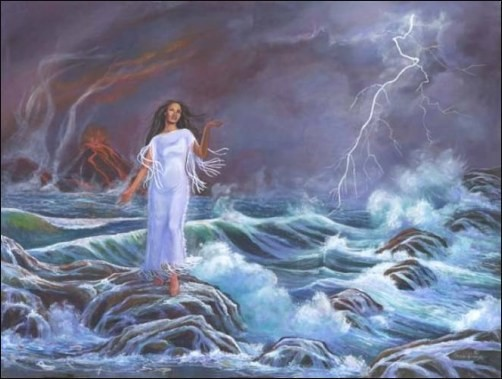
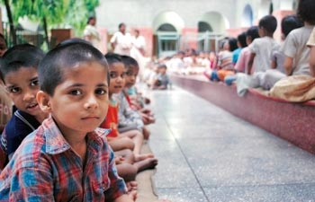
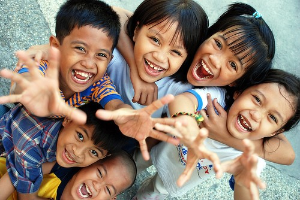
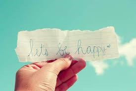
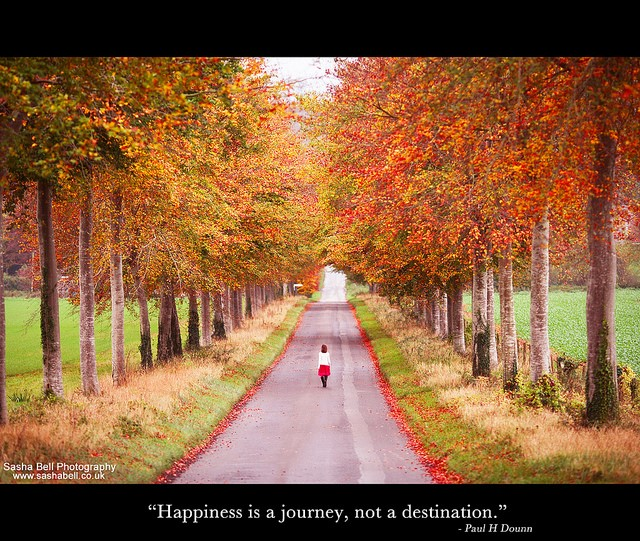
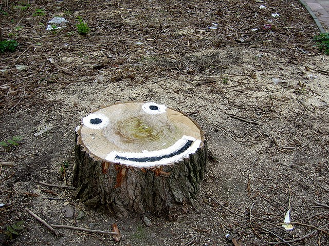
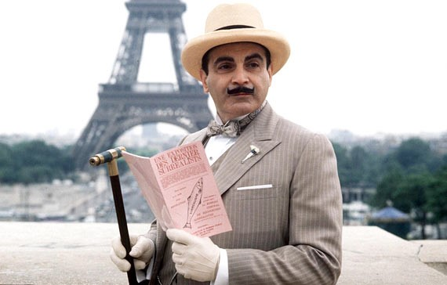
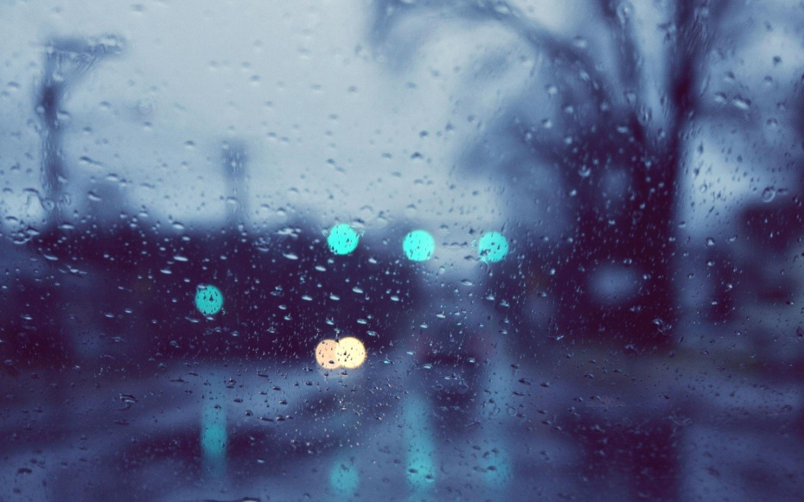
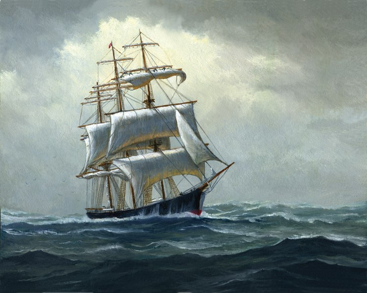

Literary Section
Contents
- A BRAND NEW YELLOW
- FLOODS AND MOTHER NATURE
- FOREVER IS A LIE
- INDIA IN 2020: MAKING CHANGES
- INTERTWINED REALITIES
- WHICH STATION ARE YOU LOOKING FOR?
- LIKE AN ASTRONAUT
- MAN AND A TREE
- SMILE
- SHOULD HERCULE POIROT MAKE A COMEBACK?
- SUN AND EARTH
- THE RAIN MAKES EVERYTHING BEAUTIFUL
- THE RAINBOW OF COLORS
A Brand New Yellow
Can you walk?
Can you run?
Can you bridge the distance between you and the sun?
Can you hear?
Can you listen?
Can you help us eliminate the existing differences?
Can you see?
Can you look?
Can you stand up with us to protect the truth?
Together we can create a Brand New Yellow,
To alter, change and transform our lives.
A yellow that shines bright as the stars,
To lead us into a future free of discriminatory wars.
Can you help us create a Brand New Yellow?
Shining brighter than the gold.
Can you help us strengthen this Brand New Yellow?
A light guiding us to a better tomorrow
FLOODS AND MOTHER NATURE
When the morning awakes, to the dark night it waves.
My feelings persuade me to again perambulate.
To feel the Sun, the Breeze, as they come my way.
But look oh unfortunate! This world takes it all away.
The gay that fades when it says, “A lot is to be done, mend your ways.”
Materialism that takes it all over, the craving for money makes them hover.
Indifferent! Pityingly, I glance and move on to the beats,
Towards the world of insane freaks!
Think about the Floods that occur due to deforestation, caused by the greed of humans.
Could these floods be a warning to us? Revenge, may be?
Warning about the degradation of the Nature's condition, big time! In the future!
A Revenge for the misdeeds done with the Nature!
"Tit For Tat" more appropriately.

Floods cause deprivation of humanity but do you; anyhow feel that "A Mother" could hurt her children even if the children do not treat her right? If yes, then I am sorry to say that she should not be called A Mother!
A Mother is symbolic of a figure that is patient, loving and caring, and here by loving and caring I do not mean being conscious about her child's success or prohibiting its freedom for the sake of so called protection or scolding the child when it scores low or does not listen to her. The love of a Mother is intense, deep and most importantly, sacrificial. It cares about the needs of the child. It respects its feelings. It is never boastful. It accepts the situations of parting with the child, obviously with a sweet pain. It trusts! In short, it is the most blissful feeling! "MAMTA"- Motherly Affection!
We have turned Mother Nature so weak that she is unable to protect us from the disasters. Still such is the power of her love that it withstands the great sufferings and pain and saves the world from the destruction. It is like Jesus being crucified for the sins committed by his children!
India in 2020: Making Changes
We’ve been mixing black and white
While trying our best to pick a side
We’ve been firing shots at night
In a fancy stadium with no lights
We’ve been taking power rides
While trying to get our air kicks right
We’ve been bragging about our might
Advising our enemies to run and hide
A corrupt matador is in sight
An unemployed Cyclops prepared to fight
It is best to fasten our seat belts tight
Hoping to remember our well-rehearsed lines
If I ever travel through time
My heart hopes to find
Some spotlight shed on equal rights
With our economy climbing new heights
I can see people stopping to stare
At the shattered glass of a fake fair
Instead of warming up, I believe
We’ll be putting up a fight to alter the society.
FOREVER IS A LIE

"A single rose can be my garden and a single friend, my world." Sometimes a single person is capable of making you happy, when a crowd of people fail to do so. Unlike the rest of the world, that person accepts you as you are, with neither any complaints nor demands.
This poem is about the importance of that one single person in your life, with whom you can share any kind of relationship. But sometimes this remarkable relationship is scarred by certain forces that make it hollow and meaningless.
This is about all those who have gone through such a situation and despite having a desire to reconnect, are not able to do so.
As the rays of the sun bring the sunflower alive,
Your very presence gave me life.
Those days when you supported me are gone,
Sans you; I do nothing but moan.
Remember the fun we had
With all reasons to smile and nothing to be sad.
But now everything is in vain,
Because you say it was all insane.
Life has gotten harder, with tears blinding my eyes,
Why even in your presence, our memories of togetherness arise?
You are not the same as you used to be,
How do I get you back, when you are always trying to escape me?
I cannot see the warmth in your eyes that I have known,
You are not here and I am left all alone.
Never will I be able to share such a bond again;
I'll miss you even though you gave me so much pain.

Now when all is gone, never to come back,
Emotions is one thing that I lack.
My tears have dried up and my heart with a deep sigh,
Has accepted that "forever is a lie".
INTERTWINED REALITIES

Oliver twist and Annie would have been successful in etching their image of the orphanage in my head, if it wasn’t for that one day when we had to visit an orphanage. Our imagination of the orphanage died on the word dreary. For us, like many others, administrators of orphanages were cruel monsters, food and clothing was scarce, and the children savage. The facts somehow seemed to support my image of the orphanages. The juvenile home where underage criminals are sent is actually an orphanage run by the state. We come face to face with scams every day; the newspaper sure gives us a dose of it. There are many orphanages set up as a front to lure foreigners to pay school fees for children who are in turn employed for back-breaking work. There was news in the papers recently, stating that some owners deliberately kept the conditions of orphans miserable to attract more donations. To show you the rosy side, it’s not the same everywhere. We were greeted by the orphanage manager at the gate who ushered us in. The house had an air of vitality and by the look on the manager’s face you could tell how proud she was of her work. She showed us around the colorful dining house, the study room with a wall chest of books, the bedroom with bunker beds and the playroom filled with toys. What caught our eye was the infant room- soft pink bedding with a blanket of another shade of pink drawn over the little ones. Two housemaids were ready on their feet to do the needful always. When we were about to exit, the warden invited us for luncheon and one of the kids going by told us that ‘Chicken Biryani’ was on the menu. It was the first time we had caught a glimpse of developed India where innocence is catered to, not deceived. On our way out there was a board showing the orphanage’s successes in numbers.
The number of kids that were admitted from all parts of the country was huge. While exiting, we had a feeling which was difficult to name but it was of the best kind. It may sound cheesy but the exit from the gate may have ended this journey of our visit but it started a new one. We never went to the orphanage again but we still cherish those happy memories and it was the best thing that happened to us.
LET THE CHILD LIVE
In the dark night
It's like a rotten bite.
Those who should fly high like a kite
Are forbidden of any light.
You lit a cracker in your world,
But behind a young universe was darkened.
The bangle which is a symbol of beauty
Which is worn by every soft heart like a duty,
Has taken the real joy away,
Will you like a smiling soul or a dead brain?
What was his sin?
What was his fault?
Can people choose the place of their birth?
Why can’t he live his dreams?
Why does he have to live with screams?
Why can’t he get education?
Why does he have to live in suffocation?
Where are the windows for him?
Why is every light ray so dim?
Is this the world we claim to be a proud part of?
Have you ever tried to see the dry tears?
Has it ever occurred to you to hear the silent fears?
Behind the so called happiness they stare,
Behind the fallen curtains they skilfully glare.
We are protesting against corruption,
But what about our corrupt minds?
We complain about lower class standards,
But what about our buried holy shrine?
The light should glow,
The wind should blow,
The cheerful life should be kindled.
Giving the child his childhood
Is important for the healing of the world's halo!
WHICH STATION ARE YOU LOOKING FOR?
How strange is it that life takes us to different places and we meet new people? This nature of life sometimes resembles a train journey. The way things happen when we travel in train, the same goes for life. We meet people, make intangible bonds and then bid adieu. The mysterious voyage of life contains the essence of the journey of a train. But there still lies a big difference, like the certain turns, halts and changing surroundings of train journey. These traits of life are much less obvious.
As we board a train, we meet new people, become friends in a few minutes and after a short while the connection appears to have reached the maximum “broadband frequency”. We chat, share emotions and have fun together. But then the train comes to a halt at a station and some of the co-passengers desert us. People who were so intimate only a few hours back, move to some other world leaving behind memories and a realization that the period of togetherness has come to its end. But then again, new passengers arrive and the cycle continues .But again we reach the same end point. Either of us has to deboard the train at a station and move on. Isn’t this what we actually experience in life?
Our childhood days and teenage, which we spend in schools and colleges, are no less than heaven. The fun, excitement and strong bonds which we share with school friends appear to be incessant. The lunch breaks, the stupid games, the class tests and the company of amazing friends in everything we do are seen as the key elements of our funny little
 world. But then the dynamic nature of life breaks this stability and then comes the separation. The promises of staying in touch and being the best buddies forever become so hollow. This lands us to our respective stations of college life.
The college provides a new life, new people and a place to create new memories. The goodbyes which we just said to a few are then followed by “hellos” to others. Then begins another journey, again a world of fun and frolic is created. Those whom we greeted with a formal smile initially are now the ones who compel us to burst into peals of laughter. They make us cherish every little moment of this beautiful life and stand by us through thick and thin. Therefore, by healing the older wounds of separation, they tie a thread of hope to our lives and promise to stay with us forever. And it’s the time when the smooth journey of life takes an unexpected turn and reminds us of different stations which lead to partition.
Yes!!! Even college life ceases and the pain of being without our closest friends hurts the soul.
It’s not just at different stages of our lives that the feeling of parting plays its role. It’s the law of nature which can greet us at any point of time. Sometimes it’s about very close relatives, our neighbors or someone we had not known for long but still had a strong connection emotionally.
Unlike the train journeys in which the time, place and most importantly, the destination of other passengers is known, everything is uncertain in life. In life, the emotional bonds between people don’t allow them to accept the parting phase of any relationship and therefore the unexpected goodbyes prove to be very painful. Thus the feeling of being alone knocks at the door. At this point one often asks as to why life follows such a trend? Why does it always happen that those who add life to our lives have to leave it for us to live alone? Well, the interrogations can’t be solved certainly but there does exist a hope of other stations which will bring new passengers into our lives, who would fill it with the hope to encourage us to live happily.
Likewise, life is also about choosing new paths. You are absolutely free to choose your own path. It’s your life, you only have to decide what’s best for you.
 Your future is not determined by the school you graduate from. It’s determined by who you are as a human being. Higher education is an important tool for building character. It can be seen as climbing a high mountain. The higher you climb, the broader becomes your vision and the wider is the world that unfolds before you. You begin to see things that you could never see before. The question of where you study - whether at a school, a two-year college or a four-year university - is something that only you can decide, based on many factors, including your family circumstances, academic ability and personal desires and ambition. If you make the decision yourself, you’ll have no regrets later. You mustn’t live a life filled with indecision and lingering regret. You mustn’t feel jealous of others. There is no easy path to success.
Then, what is the purpose of our life’s journey? Obviously, to be happy. What is happiness then? It’s all about feeling contented and attaining personal satisfaction.
What is fulfillment then? It is satisfaction or happiness as a result of fully developing one's abilities or character. That can be only done when we face difficulties in our lives. Without difficulties and challenges, there can be no fulfillment, and without fulfillment, there is no happiness. There is no happiness without hardship. Everyone forgets the process of battling hardships, and searches only for the end result - the destination of happiness. Instead “happiness is a journey, not a destination”.
LIKE AN ASTRONAUT
Life was a pleasure until I grew a year older,
It was a treasure I roamed for with fear yet I was bolder.
Now I have reached the top of the staircase where there is nothing to look for ahead,
I wish to climb down that wooden ladder, but sadly it has removed all its steps instead.
A year ago, I was so full of zest and joy,
Starting a new journey that would decide my career choice.
I had no depressing thoughts to ponder upon,
I was confident, cheerful and so damn satisfied.
Now it’s like my life's seed has gone into a dormant stage,
It is resting there in peace before I do the same.
I am shattered to the core,
Even the pieces refuse to stay,
I want to let go of them,
But ultimately they are not just junks of clay.
I had family to understand me, parents to care.
I have ruined even that relation.
Now they are just acquaintances in a traumatic fare,
The respect we had for each other has snapped out in the dark,
We talk just to deceive ourselves with condolence of doubt that maybe still; we are a family though apart.
I used to have a sound mind,
To score decent marks in tests.
But now a year wiser brain,
Commits more mistakes than an inquisitive toddler.
I still have friends, who have got my back,
But I just don’t feel like turning around.
Can’t they just come join me?
And look me in the eye to assure me they care?
They don’t have time to even notice,
How painful my thoughts are becoming,
And they are not at all wrong at it,
As may be I expected too much glitter.
My best friends are still intact,
But torturing is the fact how my good friends are drifting apart.
I don’t want to be looked upon like a depressed spirit,
Who has no zeal to live any longer.
I am not going to let this happen to me,
A soulful dancer, who was the apple of her own eye.
I'll make things work,
Get my hold back on life,
No more humans would be able to evade my peace,
No more distractions to kill me inside.
I am collapsing, of that I’m very sure.
But a sole winner is not the one, who falls,
But the one who looks right back without blinking an eye.
At last my heart's sinking concern is my belief in God,
Is He really there?
If yes, why is he torturing me this far?
I know I had committed a bunch of mistakes in my previous year and so I regret,
But can’t He just forgive and forget those,
Considering each action to be a part of my adrenaline rush?
MAN AND A TREE
MAN - Hello tree! How are you? Tell me something new?
TREE - I am good, and as always, preparing food and O₂.
MAN - Why do you grow so tall, tree?
TREE - I love these heights at which I am.
They make me feel free.
The warmth, the glow, lightness and coolness of nature is with me.
This is what keeps me healthy and happy.
Way up here, I see the marvelous turquoise sky.
My little friends who fly, and others who go by.
MAN - Hey tree, you remain so quite, do you have friends?
TREE - The cool wind, glistening clear water, teeming soil, the ground,
Birds, flies, eagles, and so many other animals that keep coming around
They nest with me, they rest with me.
They take care of me, even when I don’t make a sound.
MAN - What do you use for food, to help you grow and grow?
TREE - I live on a diet of Nature’s best from my roots deep down below.
I never go hungry, I rest and rest and wait for rain and snow.
MAN - Hey tree, look at your colour! Do you think you look good in brown and
Green?
TREE - Beauty lies in the eyes through which I am seen.
I’m very happy and love what nature has given me.
MAN - You lose your leaves in autumn; don’t you feel a lot of pain?
TREE - My falling leaves rake a carpet which saves the ground from frost, that
For me is rather a gain.
MAN - We cut you for pulp, fuel, timber,
Wood for houses and furniture.
Is there a message you want to send?
TREE - I just want so say, we trees are your best friends.
We love to help you when you want a hand.
But we expect you to help five others to flourish and stand.
MAN - Hey tree, what do you think standing like this for the whole day?
TREE - Those who I work hard for don’t make me disappear, this is what I pray.
SMILE
If you want to know my friend, why do I smile so much?
Just fantasize yourself , stuck in a situation this tough,
That life is your murderer, with a weapon of ‘problems’ here he comes,
To take away the liveliness within, and make your soul numb.
And then of course you analyze the situation, plan out to try and run,
But oh, human! This track beneath your feet is such a swampy gum.

There are two ways in which you can fight this bout of life,
One is the one they choose in general, and the other is mine.
The first- to fight with power and tricks of cruel selfish pride,
The other- to have the innocent action of holding his hand and smile,
For I know my friend that I will ultimately complete my span and die,
So why should I fight with life via all my strength and fright?
I may seem so different and stupid to you at times,
But I prefer being pure at heart, just fighting through life with this SMILE!
SHOULD HERCULE POIROT MAKE A COMEBACK?
The famous Belgian detective with an egg shaped head might make a comeback. Agatha Christie’s famous character Hercule Poirot might get resurrected. I, for one, have mixed feelings about this news.
The Belgian and his famous grey cells will be revived by the crime author Sophie Hannah. Poirot last starred in ‘Curtains’ almost 40 years ago, and now he is coming back to solve more mysteries in the hands of Sophie Hannah.
A part of me doesn’t like the fact that Hannah is going to borrow the brilliant imagination of the most famous crime writer and give it new life. How is she being any different from the people who sell imitations of famous paintings? That is not where my problems with this idea end. What guarantee will she give that she will write a masterpiece at par or better than Christie’s? If she can’t make the book better what is even the point of writing the novel?
At the same time another part of me would like to read her version and see how she brews the plot of the story and characterizes Poirot. Just like famous people have multiple biographies, written by different people, each giving a fresh perspective of the person, why shouldn’t famous literary characters also be explored through different angles? Hannah’s story might be more modern. Maybe Poirot, instead of enjoying his favourite cup of cocoa, might drink an ice cold beer.
I am eagerly anticipating the release of the new book! All the mysteries surrounding the outcome will come to rest after its release.
SUN AND EARTH
Sun shines bright, over his earth bride.
Its valour so rich, brilliance so high
Earth ends up supporting mere life.
Sun so high; earth so down.
Yet affectionate, they watch their distant mate.
Could never meet, for his touch shall burn his bride
Watches, shining bright.
Causes winds and rains for life to exist.
Earth's dearest, to over shine its mist.
For the sun never turns rude, never expressing its solitude.
Never says, “Sweetheart, you owe me.”
Sun so high, earth so down.
Yet affectionate watch their distant mate.
Earth's million stars, Sun's faithful planets.
Have both chosen to love each other yet?
Sun's hot day and stars' beautiful night, what do you choose dear Earth?
One means fury, other stays calm.
One nurtures life, other no harm.
Sun lets your hand aclasp, thus you wear night.
Night coats from heat, so you not burn with Sun's bright.
Affectionate, they watch their distant mate.
THE RAIN MAKES EVERYTHING BEAUTIFUL

It was in the month of July. I had been going through a time when nothing seems to be happening in the right way. I wasn’t in my best spirits. I came back home after an extremely tiring day and dropped straight on the bed with hopeless thoughts brewing in my mind. I don’t know when I drifted off to sleep.
After about an hour or so, I woke up to the pitter-patter of raindrops on my window. Owing to all the negativity that had taken me over in the last few days, I thought it must be the usual five-minute spell which just ends up making the weather more humid and unbearable. But I realized I was wrong, it went on for quite some time. Just then, my brother came back home, all soaked up, and I felt like going out there and getting wet too.
I called up my friend Surabhi, she said “Aren’t you supposed to be down with fever?” to which I replied, “I was, but not anymore.” So we decided to meet up. I walked to her place, it took me just about five minutes, but by the time I reached, I was completely drenched. We went upstairs to her roof, and it was amazing!
It was raining cats and dogs, with the wind blowing so fast that the raindrops were like slaps on our skin. The lightning was frightening and exciting at the same time. The thunder shook the ground beneath us. We were completely drenched, shivering with cold, but I had never enjoyed the rain so much before.It reminded me of my childhood, when we used to dance in the rain, absolutely carefree. But this… this was a whole new angle. It was as if all the bitterness and negativity was just washed away.
We kept saying, “This is so good!”, “Awesome”, “Best rain of my life!” and I realized how lucky I am to have a friend crazy enough to do this with me while, it seemed, the whole city was cursing the traffic jams and sitting at home, in front of their TV sets, missing out on what was probably the best rain spell Delhi had had in years!
We were smiling, grinning ear to ear, feeling overwhelmed, ecstatic and completely devoid of regrets. For me, this was the kind of experience which gets embedded in your memory forever. I’ll never forget this day, because it was the day that nature tried its best to lift my spirits; and when nature itself tries to make you happy, it’s hard not to be!
THE RAINBOW OF COLORS
I see the bird waking,
Through the red dawning sunshine.
I see the trees speaking:
"Others move,
while we stand in a line".
They become green with envy,
As jealousy runs through their spine.
The bride is as pink as a rose,
A lover so wonderful she didn’t suppose;
Her eyes narrowed,
Her cheeks flushed,
I saw the hues on her face as she blushed.
The sky is blue from one horizon to the other,
Like a young child away from his mother.
I see the roses yellow and white.
I see the morning mist, new born,
Glimmering like small stars so bright.
The world is so wonderful,
A place so beautiful.
I see the violets bloom purple,
I see them with each other, tussle,
Tussle for attention,
Like people puzzled with tension.
The water is colourless,
But the ocean is blue,
And ice floats on it with a sapphire hue.
The river is green
Like emeralds would have been.
As all the precious gems, all stones,
When light fell upon them, they shone.
Colours prodigious, hues ubiquitous.
Innumerable countenances, without barricades, audacious!
The world is so wonderful,
A place so beautiful.
Hues here, hues there.
But alas! I can’t see them.
I only see the black fuss.
Oh Lord so kind, I can't see them,
For I am blind.
Please someone; tell me what red, blue or green is?
Only black around me can be seen.
My rainbow is black, black is my hue.
An account the God has left for me due,
For now, myself, I want to slew.
Can someone explain what green, blue, red is?
Can you tell me how to distinguish between purple & blue?
For black is my rainbow and black is my hue.
Oh! Someone so kind,
Explain, elucidate, describe, and satisfy my greed!
The world is so wonderful,
a place so beautiful.
Indeed it is!
But alas! I can't see it.
I can only hear thee.
The day never comes, there's only night.
The sun never shines, it’s never bright.
A night very dark, with no moon bright.
Mortification and malice around me are curled,
And anyone who can explain the meaning of colour to me
Can explain anything in the world.
THE VOICE FROM WITHIN
“There is no greater agony than bearing an untold story inside you.” This is what got me to share my thoughts with you all. So here I am, a normal real life person, who is not portrayed in any Bollywood or Hollywood flick, sitting with a cup of coffee thinking about whether I have fulfilled any of the numerous dreams I saw in my childhood. The answer is not what we want to hear. If we take our mind back a couple of years, and think about where we saw ourselves as of today and where we actually are, we will realize how life twists and turns all our future plans and forces us to live in the moment, thereby inflicting pain and hardships in all possible ways.
The very fact that most of us are nowhere near where we wanted to be in life makes us very sad, and makes us wonder about the purpose of our life. It makes us question why God made the world the way it is, as God could have easily made a world without any regrets, hardships and disappointments, where all of us could achieve and get whatever we wanted.
Being completely free and bored, I decided to step into the spiritual world to think about the question, till I got a satisfactory answer. As it is said, the answer lies within; this is what I was able to come up with:-
Yes, this is a world that is corrupt, we don’t know why God chose this world instead of others, and we don’t know why it’s full of birth, conflict and death. But all we know is that birth is when we are carried into this world, when God creates us; pain reminds us of all that which hurts; conflict is when, well, our life starts to play all out, it challenges us to be better; and death, well death is when we sum up all the good things we did in life.
The happiness of succeeding won’t be the same if we never failed. The joy of witnessing a birth won’t be the same without ever witnessing death. We have highs in life only because we went through lows before. So the main purpose of pain and failure is to make us realize the importance of success, happiness and joy. So keep in mind, however tough or difficult your life may be, there is a reason behind it, therefore the best way to steer ahead is to believe that only good things will happen to us in life.
“We must free ourselves of the hope that sea will ever rest. We must learn to sail in high winds”. -Aristotle.
TRUTH OF LIFE
This world is nothing, but a sheer reverie.
One comes and ceases at destined hours expiry.
To pass the life is to cross the sea
Enveloped with storms wherever ye be.
But don’t be sad, face the troubles with bravery.
Neither your tears nor your sighs will let you free.
WHATEVER DREAMS MAY BRING
"Be the change you want to see in the world and watch closely as the world resists," muttered the old fool, being ironic or just plain sadistic, he'll never know. He never had the courage to ask. But his fate was decided- a college, a degree, a job, a loving wife, and if money permits, a house, his life all set, on a course decided by his old man. The Indian Dream.
"I fell in love with a girl but she's in love with the world, didn't think that was possible," his friend nodded in agreement, as they both chugged down the last sip of beer from the bottle, together. Only if there was an Olympic event for synchronized beer chugging, they could bring India another gold medal. His friend had left, alone he gazed at the moon and she was all he could think of. Her smile, did not, would not leave his thoughts. They had been friends, were still friends and now she had gone, for a long while at least. He had long thought cowardice was a virtue, now he wished he had been reckless. But maybe he could move on, would be difficult, but just maybe.
"Because I deserve it," he mumbled out to the job interviewer.
It was his witless response to the, “Why should we hire you?" question.
"Bad answer." he thought to himself. He had prepared an answer but had given up midway through the interview; he didn't want the job anymore. He was tired of boasting to the interviewer about what he was not- hardworking. He was a serial procrastinator, had been one his entire life, and probably would remain that way for what was left of it.
"You may leave." said the interviewer.
"What?" he asked, he had stopped paying attention to the man.
"You may leave; you'll get the results later," he replied.
"Okay. Thank you Sir," he responded and walked out.
He had for far too long lived the life he had been told to, by his family, by friends, now it was his time to follow his dreams,
whatever they were he was still to find out.
"Shouldn’t take long now", he thought to himself. He was 22 years old now; they couldn't be that far. He had never been so wrong.
WISH YOU WERE HERE
I got everything I need, no where I'd rather be.
This world is strange to me, can’t comprehend what I see,
Can’t understand what I believe.
Days are getting short, nights are becoming long,
I have been bleeding all along,
I don’t know where I belong , don’t know where I went wrong,
Can you hear my heart's song?
Wish me goodbye, I just want to fly,
And head out for the seas.
I got everything I need, love of friends and family.
Secrets I don’t want to keep, never learnt to set them free.
These tears are not for me.
Lying on my bed, can’t get you out of my head,
Wishing you were here instead.
Dying to get some sleep,
Dreams don't come to me,
Is this all I will ever be?
Wish me goodbye, I just want to fly,
And head out for the seas.